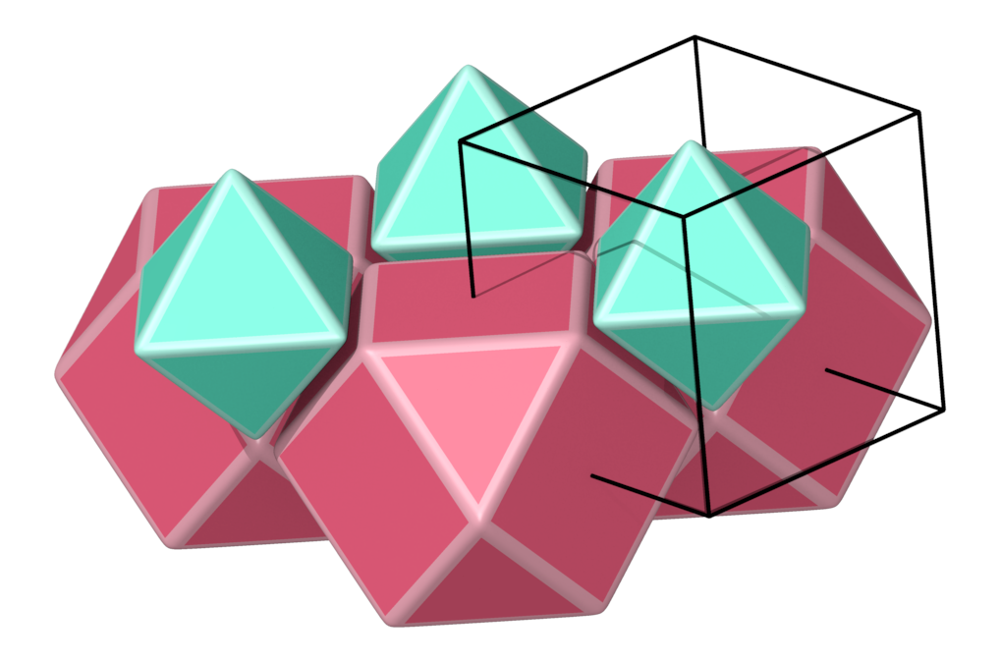
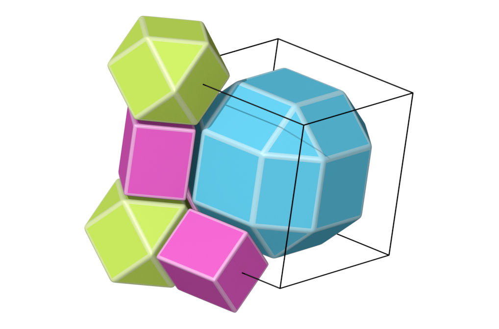
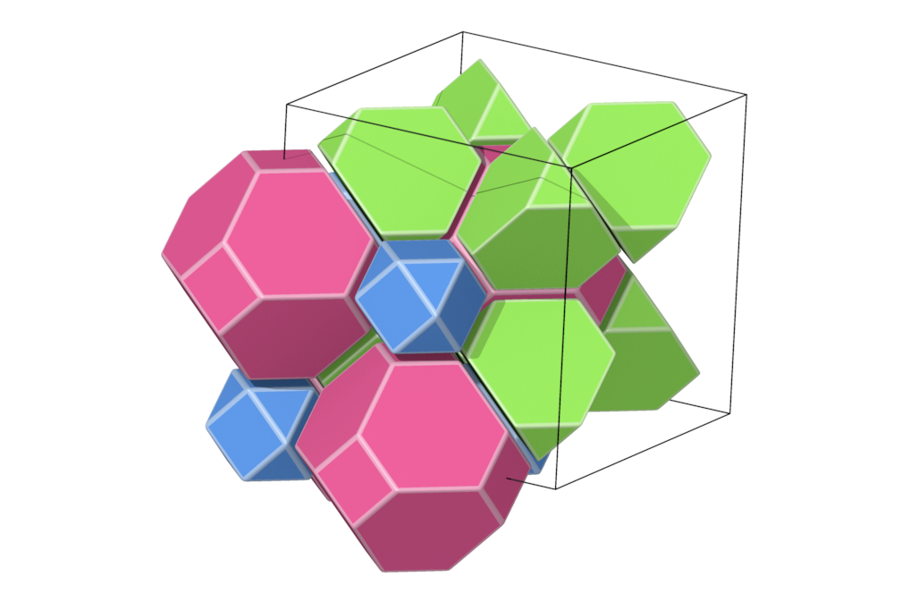
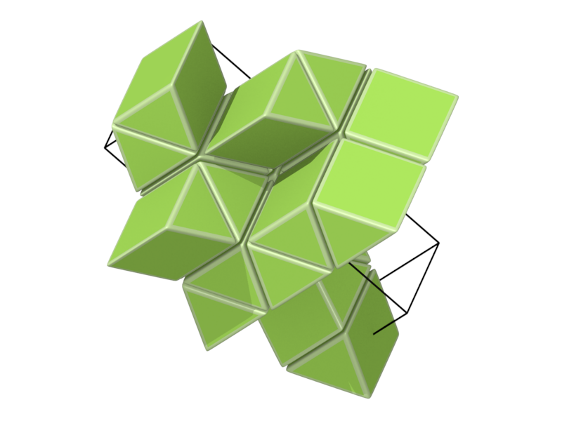

Uniform partition of 3-space
- A tiling is said to be an uniform partition of 3-space if it is formed by Archimedean polyhedra and the symmetry group is transitive on vertices.
- Such tilings were correctly enumerated in
- M. Deza and M. Shtogrin, Uniform partitions of 3-space, their relatives and embedding (with M.Shtogrin), papers/mathematics/9906034 of LANL archive, European Journal of Combinatorics, Special Issue `` Discrete Metric Spaces'', 21-6 (2000) 807--814
- B. Grunbaum, Uniform tiling of 3-space, Geombinatorics 4 (1996) 49-56.
- N. Johnson, Uniform polytopes, manuscript 1991.
- Wrong enumeration and listings are for example:
- A. Andreini, Sulle reti di poliedri regolari e semiregolari e sulle corrispondenti reti correlative, Mem. Soc. Italiana della Scienze, Ser. 3, 14 (1905), 75.129.
- K. Critchlow, Order in Space, Viking Press, New York, 1970.
- P. Pearce, Structure in Nature is a Strategy for Design, The MIT Press, Cambridge, MA, 1978
- R. Williams, Natural Structure, Eudaeman Press, Moorpark Ca. 1972; reprinted as The Geometrical Foundation of Natural Structure, Dover, New York, 1979.
- R. V. Galiulin, Lectures on Geometric Foundations of Crystallography (in Russian), Chelyabinsk University, 1989.
- Thus, we give pictures of those partitions which are not available from the correct enumerations and only partially from the incorrect ones
- After this small work was done, I found that different pictures are availablke from Reticular Chemistry Structure Resource
- The program that we used for making the picture is 3dt by Olaf Delgado which is a very efficient program for drawing pictures from combinatorial informations
- We give pictures, a short description and the Delaney symbol, which encode the structure (please see articles by Delgado, Huson, Dress for description of the Delaney symbol)
- Many tilings were obtained from the database small.ds of the program 3dt while others were obtained from polyhedral with the scripts available here
- For the space groups description we refer to following references:
- We follow the nomenclature of Grunbaum, which is the clearest and give the nomenclature as follows: G-x, DS-x, J-x, C-x, P-x whenever possible for Grunbaum, Deza-Shrogrin, Johnson, Critchlow and Pierce
- Structure number 1 (DS-5, A-2, C, W-9, J-21)
- Picture:
- Delaney symbol
- This is the Delaunay tesselation of A3 lattice
- tetrahedra, octahedra, ratio 1:2, vertex figure 8:6
- Space group Fm-3m
- Structure number 2 (DS-24, A-2', J-52)
- Picture:
- Delaney symbol
- There is a continuum of tesselations by tetrahedron and octahedron obtained by slicing layers of tetrahedron, octahedron. Only two are vertex transitive, the above and this one
- tetrahedra, octahedra, ratio 1:2, vertex figure 8:6
- Space group P63/mmc
- Structure number 3 (DS-25, J-61)
- Picture:
- Delaney symbol
- Insert a layer of Prism3 between the layers of structure number 1
- tetrahedron, octahedron, Prism3, ratio 2:1:3, vertex figure 4:3:6
- Space group R-3m
- Structure number 4 (DS-26, J-62)
- Picture:
- Delaney symbol
- Insert a layer of Prism3 between the layers of structure number 2
- tetrahedron, octahedron, Prism3, ratio 2:1:3, vertex figure 4:3:6
- Space group P63/mmc
- Structure number 5 (DS-19, A-16, C, W-11, J-23)
- Picture:
- Delaney symbol
- Tetrahedron, rhombicuboctahedron, cube, ratio 2:1:1, vertex figure 1:3:1
- Space group Fm-3m
- Structure number 6 (DS-6, A-13, C, W-10, J-25)
- Picture:

- Delaney symbol
- tetrahedron, truncated tetrahedron, ratio 1:1, vertex figure 2:6
- Space group Fd-3m
- Structure number 7 (DS-8, A-15, C, W-14, J-12)
- Picture:

- Delaney symbol
- octahedron, cuboctahedron, ratio 1:1, vertex figure 2:4
- Space group Pm-3m
- Structure number 8 (DS-7, A-14, C, W-15, J-13)
- Picture:
- Delaney symbol
- octahedron, truncated cube, ratio 1:1, vertex figure 1:4
- Space group Pm-3m
- Structure number 9 (DS-18, A-17, C, W-12, J-14)
- Picture:

- Delaney symbol
- cuboctahedron, rhombicuboctahedra, cube, ratio 1:1:3, vertex figure 1:2:2
- Space group Pm-3m
- Structure number 10 (DS-20, A-21, C, W-17, J-22)
- Picture:

- Delaney symbol
- cuboctahedron, truncated tetrahedron, truncated octahedron, ratio 1:2:1, vertex figure 1:2:2
- Space group Fm-3m
- Structure number 11 (DS-3, A-2, C, W-9, J-21)
- Picture:
- Delaney symbol
- lamination over plane tiling by triangles
- Prism3, vertex figure 12
- Space group P6/mmm
- Structure number 12 (DS-27, J-63)
- Picture:

- Delaney symbol and the program to generate it
- Triangle prisms form one layer with square faces. Another layer is superimposed with a twisting and so on
- Prism3, vertex figure 12
- Space group I41/amd
- Structure number 13 (DS-13, A-11', C, J-65)
- Picture:
- Delaney symbol
- Prism3, cube, ratio 2:1, vertex figure 6:4
- Space group Cmmm
- Structure number 14 (DS-14, A-11, J-44)
- Picture:
- Delaney symbol
- Lamination over tiling by squares and triangles
- Prism3, cube, ratio 2:1, vertex figure 6:4
- Space group P4/mbm
- Structure number 15 (DS-28, J-64)
- Picture:
- Delaney symbol
- Same as 12 but with layer of cubes put between
- Prism3, cube, ratio 2:1, vertex figure 6:4
- Space group I41/amd
- Structure number 16 (DS-21, A-9, C, J-47)
- Picture:
- Delaney symbol
- Prism3, Prism4, Prism6, ratio 2:3:1, vertex figure 2:4:2
- Space group P6/mmm
- Structure number 17 (DS-12, A-12, C, J-48)
- Picture:
- Delaney symbol
- Prism3, Prism6, ratio 8:1, vertex figure 8:2
- Space group P6/m
- Structure number 18 (DS-11, A-8, C, J-43)
- Picture:

- Delaney symbol
- lamination over kagome
- Prism3, Prism6, ratio 2:1, vertex figure 4:4
- Space group P6/mmm
- Structure number 19 (DS-15, A-7, J-46)
- Picture:
- Delaney symbol
- Prism3, Prism12, ratio 2:1, vertex figure 2:4
- Space group P6/mmm
- Structure number 20 (DS-10, A-19, W-19, J-18)
- Picture:
- Delaney symbol
- rhombicuboctahedron, truncated cube, cube, Prism8, ratio 1:1:3:3, vertex figure 1:1:1:2
- Space group Pm-3m
- Structure number 21 (DS-17, A-20, W-19, J-18)
- Picture:
- Delaney symbol
- truncated tetrahedron, truncated cube, truncated cuboctahedron, ratio 2:1:1, vertex figure 1:1:2
- Space group Fm-3m
- Structure number 22 (DS-1, A-1, C, W-1, J-11)
- Picture:
- Delaney symbol
- Is any description needed?
- Cube, vertex figure 8
- Space group Pm-3m
- Structure number 23 (DS-22, A-10, C, W-8, J-49)
- Picture:
- Delaney symbol
- Cube, Prism6, Prism12, ratio 3:2:1, vertex figure 2:2:2
- Space group P6/mmm
- Structure number 24 (DS-10, A-6, C, J-45)
- Picture:
- Delaney symbol
- Cube, Prism8, ratio 1:1, vertex figure 2:4
- Space group P4/mmm
- Structure number 25 (DS-16, A-18, C, W-13, J-17)
- Picture:
- Delaney symbol
- Take Delaunay polytopes of orbit of (0,1/4,1/5) in the cube lattice
- cube, truncated octahedron, truncated cuboctahedron, ratio 3:1:1, vertex figure 1:1:2
- Space group Pm-3m
- Structure number 26 (DS-4, A-18, C, W-13, J-17)
- Structure number 27 (DS-9, A-22, C, W-18, J-19)
- Picture:

- Delaney symbol
- Take the Delaunay polytopes of the orbit of the vector (1/3, 1/4, 1/5) in the cube lattice
- Prism8, truncated cuboctahedron, ratio 3:1, vertex figure 2:2
- Space group Im-3m
- Structure number 28 (DS-2, A-3, C, W-2, J-16)
- Picture:
- Delaney symbol
- This is the Voronoi polytope of the A3 lattice, also called Kelvin polytope
- truncated octahedron, vertex figure 4
- Space group Im-3m